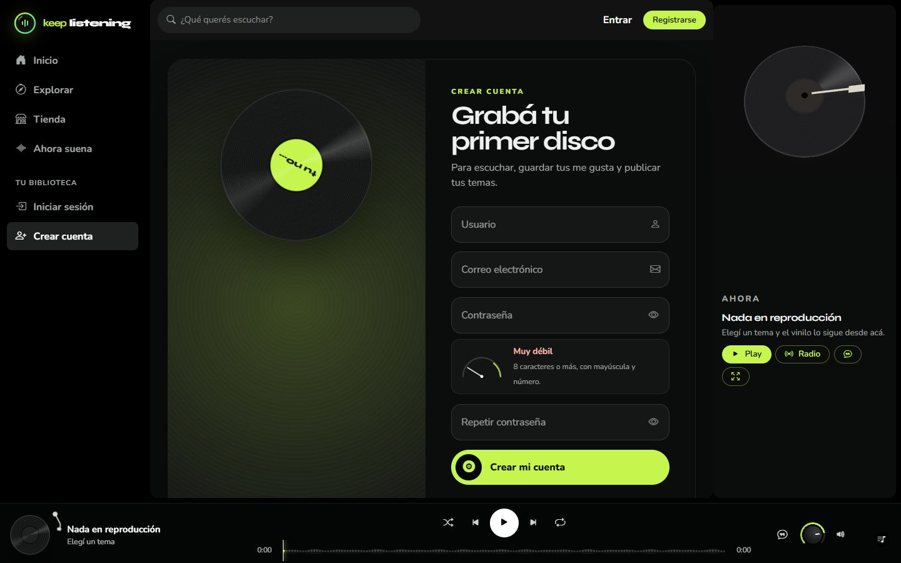
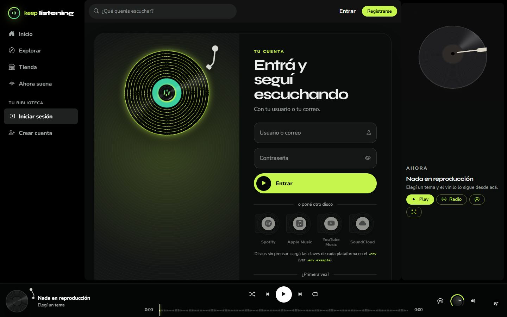
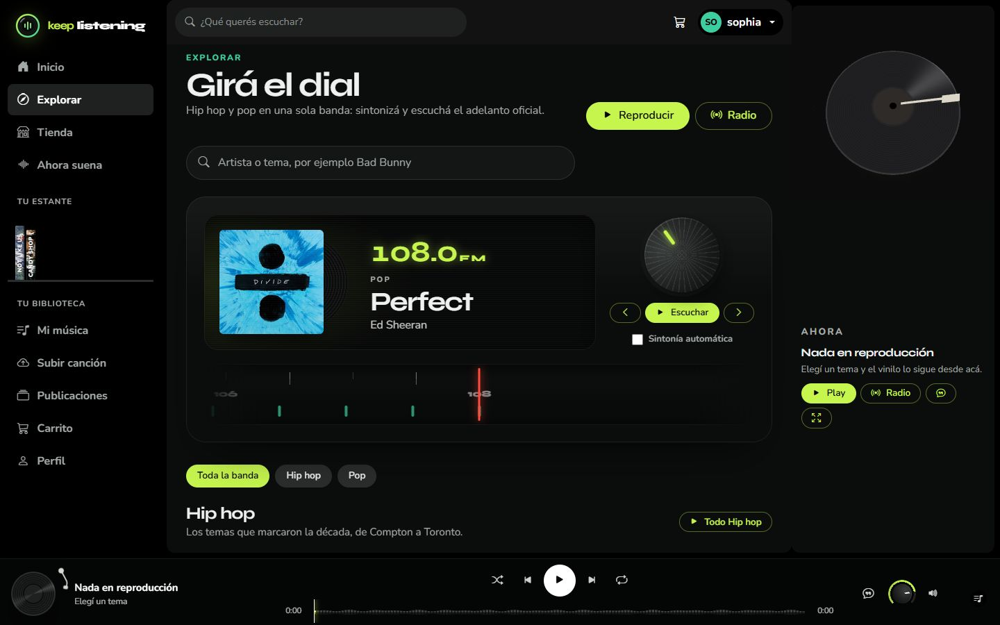
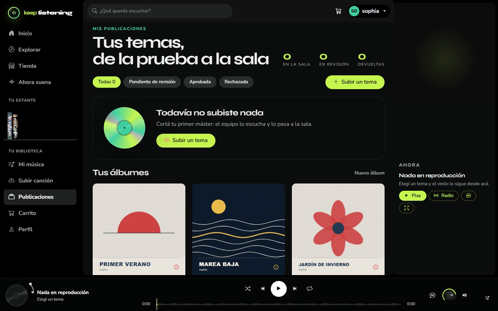
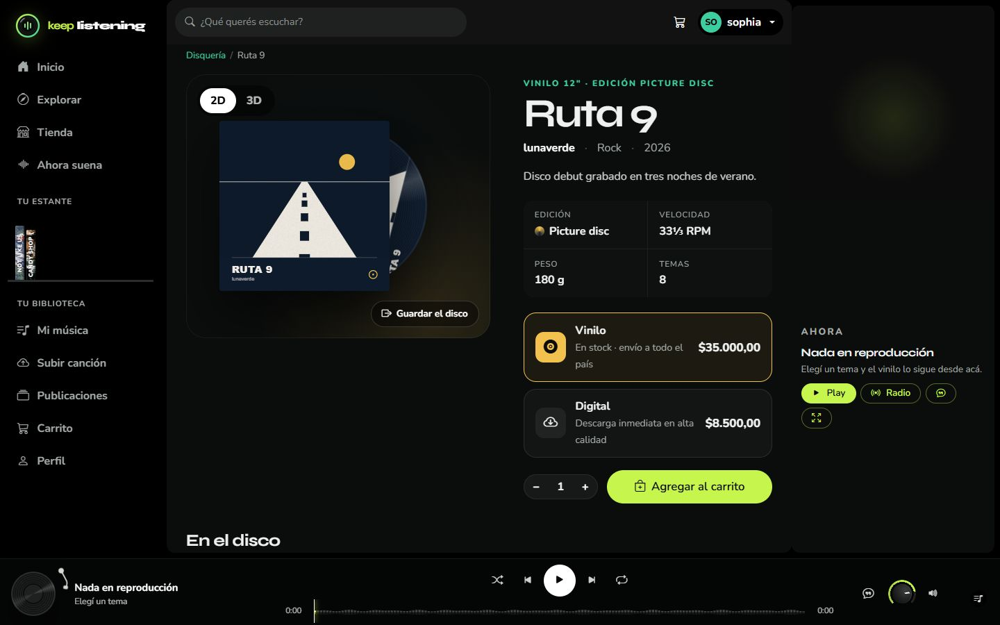
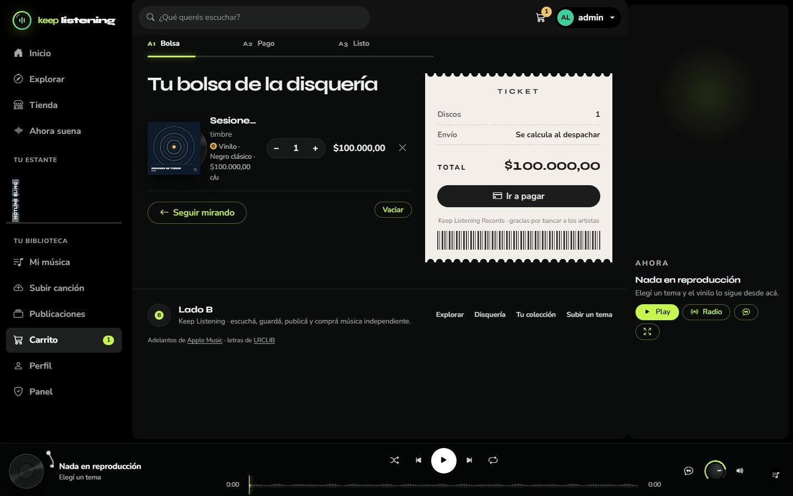
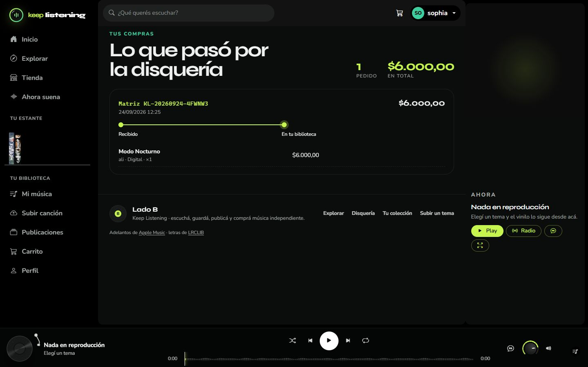
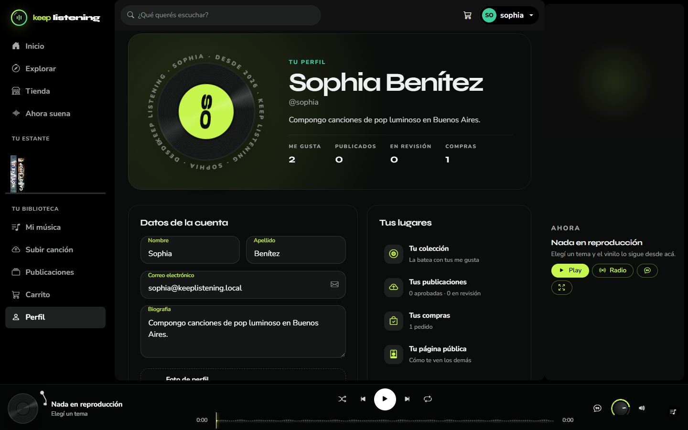
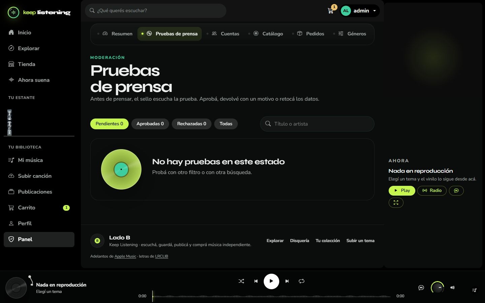
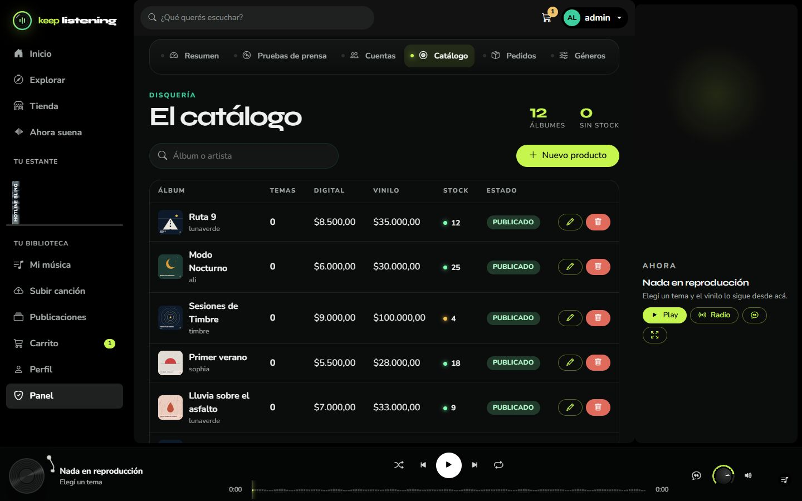

Manual de usuario
Keep Listening
Cómo usar la página: escuchar, guardar, publicar y comprar música.
| Integrantes | Sophia Benitez · Alí Pérez |
|---|---|
| Empresa | TecnoPlus |
| Materia | Taller de Construcción de Software · 6.º año |
| Entrega | 6 de noviembre de 2026 |
1. Crear una cuenta e iniciar sesión


- Tocá Registrarse (arriba a la derecha).
- Completá usuario, correo y contraseña. La contraseña necesita al menos 8 caracteres, una mayúscula y un número; la barrita te dice si es segura.
- Tocá Crear mi cuenta. Ya entrás con tu sesión iniciada.
Para volver a entrar: Entrar, y escribí tu usuario (o tu correo) y tu contraseña. El ojito muestra la contraseña.
Abajo del formulario aparecen discos de Spotify, Apple Music, YouTube Music y SoundCloud. Sirven para entrar con esas cuentas cuando el administrador las configura; mientras tanto se ven apagados.
2. Escuchar música
Inicio

En el inicio flotan doce temas elegidos al azar (cambian cada vez que entrás). Más abajo están el disco del día, el ranking de la comunidad, el juego "Tres segundos" y los discos nuevos de la tienda.
Explorar

Funciona como una radio: girá la perilla o usá las flechas para cambiar de "estación" y tocá Escuchar. Con el buscador encontrás cualquier artista o tema, y más abajo están las listas de Hip hop y Pop.
El reproductor

| Botón | Qué hace |
|---|---|
| ▶ / ❚❚ | Reproducir o pausar (también con la barra espaciadora). |
| ⏮ ⏭ | Tema anterior o siguiente. |
| Aleatorio / Repetir | Mezcla la cola o repite. |
| La onda | Muestra el tema; tocala para adelantar. "Estribillo" salta directo al estribillo. |
| ♡ | Guarda el tema en Mi música. |
| Perilla | Volumen: girala arrastrando, con la rueda del mouse o con las flechas. El parlante (o la tecla M) silencia. |
| 💬 Letra | Abre la letra del tema. |
| Pila de discos | Muestra la cola: lo que va a sonar después. |
La letra

La letra se muestra en pantalla completa y avanza sola con la canción: la línea que se canta queda adelante y las demás se alejan. Tocá una línea para saltar a ese momento. Si un tema no tiene la letra sincronizada, se muestra entera, como una hoja. La flecha de arriba a la izquierda cierra esta pantalla.
3. Guardar canciones

Tocá el corazón ♡ de cualquier tema. Lo encontrás después en Mi música, ordenado como discos en una batea: pasalos con la rueda del mouse o arrastrando, y tocá Toda la batea para escucharlos seguidos. Los últimos que guardaste también aparecen como lomos de disco en el menú, en Tu estante.
4. Publicar tu canción


- Entrá a Subir canción.
- Arrastrá el audio (mp3, wav, ogg, m4a o flac, hasta 25 MB) o tocá para elegirlo. Vas a ver su onda dibujada en el disco.
- Completá el nombre, el género, si es un sencillo o parte de un álbum, y la portada (cuadrada, hasta 5 MB).
- Tocá Enviar a revisión.
Un administrador la revisa. En Publicaciones ves en qué estado está cada tema: en revisión, en la sala (aprobado, ya lo escucha todo el mundo) o devuelto, con el motivo para que lo corrijas. Desde ahí también podés crear un álbum.
5. Comprar discos




- En Tienda buscá o filtrá discos por género y formato, y tocá uno para ver su ficha. Con 2D / 3D podés girar el vinilo.
- Elegí Vinilo (físico, con envío) o Digital, la cantidad, y tocá Agregar al carrito.
- En el Carrito cambiá cantidades o quitá discos. El ticket muestra el total. Tocá Ir a pagar.
- Completá los datos de la tarjeta (número, titular, vencimiento y código) y tocá Pagar.
El pago es una simulación: no se cobra nada. Para probar podés usar la tarjeta 4111 1111 1111 1111, vencimiento 12/30, código 123. De la tarjeta solo se guardan los últimos 4 números.

6. Tu perfil

En Perfil cambiás tu nombre, tu foto, tu biografía y tu contraseña, y ves accesos rápidos a tu colección, tus publicaciones y tus compras. Tu página pública (la que ven los demás) muestra tus temas publicados.
7. Para el administrador

Con una cuenta de administrador aparece Panel en el menú. Tiene seis pestañas:
| Resumen | Cuentas, temas en revisión, escuchas, me gusta, pedidos y lo facturado. |
|---|---|
| Pruebas de prensa | Las canciones que suben los usuarios: escuchalas y aprobalas, devolvelas con un motivo o eliminalas. |
| Cuentas | Buscar usuarios, cambiar su rol o bloquearlos con un motivo. |
| Catálogo | Crear, editar o quitar los discos de la tienda (precios, stock y formatos). |
| Pedidos | Ver las compras y avanzarlas: pagado → enviado → entregado, o cancelarlas. |
| Géneros | Agregar o quitar géneros musicales. |


8. Preguntas rápidas
- No suena nada: revisá la conexión a internet y que el volumen no esté en silencio (el parlante tachado).
- Me pide iniciar sesión al tocar un tema: escuchar requiere una cuenta.
- No encuentro mi canción en Explorar: todavía está en revisión. Fijate en Publicaciones.
- Atajos de teclado: espacio (pausa), Shift + flechas (anterior / siguiente), M (silencio).
Keep Listening · TecnoPlus · Sophia Benitez y Alí Pérez · 2026